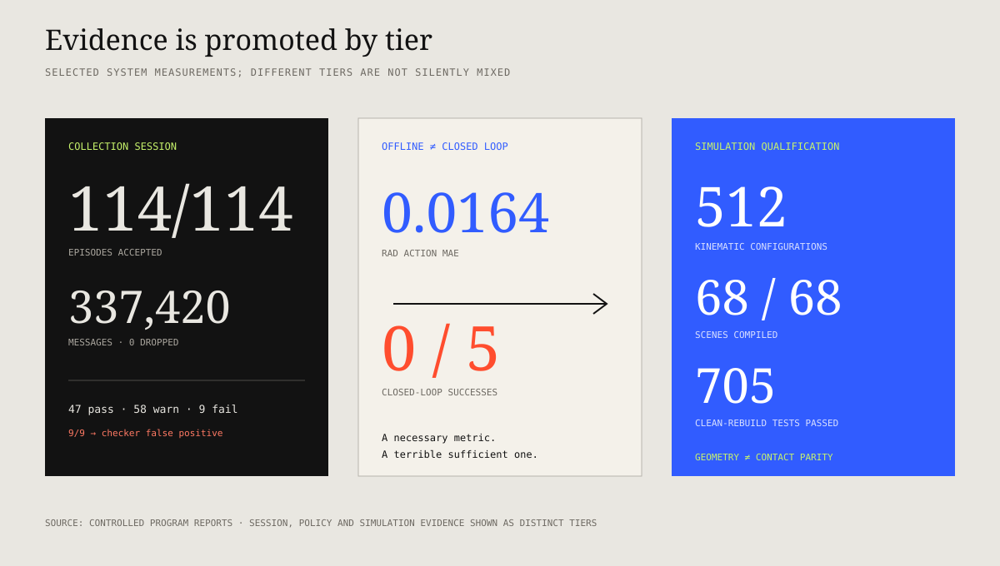

What infrastructure makes a learned robot policy reproducible, diagnosable, and safe enough to test on physical hardware?
I architected and implemented a shared ROS 2 platform that connects multimodal teleoperation, synchronized recording, dataset governance, policy training, offline diagnosis, calibrated simulation, staged evaluation, controlled deployment, and corrective-data capture. The contribution is not a single model: it is the evidence path that lets models change without losing experimental control.
StatusCore system implemented · evaluation program active
Abstract
Robot learning becomes scientifically useful only when the demonstrations, model, simulator, controller, rollout, and human judgement can be traced to one another. This platform makes those handoffs explicit and treats every success, refusal, and intervention as evidence.
Select a stage to inspect its contract, evidence, and current boundary.
Implemented
One task contract governs the demonstration.
Device choice and controller mode remain independent, while readiness, workspace, discontinuity, and freshness checks fail closed before motion.
Input
operator intent · task context · device stream
Output
bounded robot target + explicit session identity
Boundary
demonstration quality still requires semantic review
Measured
Cause and consequence share one timeline.
Vision, state, targets, gripper commands, timing, annotations, and intervention events are recorded together rather than reconstructed after training.
Evidence
337,420 messages · zero recorded drops in the qualification session
Rate
RGB 30.004 Hz · robot streams 100.2 Hz
Boundary
one controlled cell configuration
Measured
Integrity and competence are separate decisions.
Technical QC validates streams and timing; read-only playback supports human judgement; accepted membership and splits are frozen and hashed before conversion.
Evidence
114 collected · 108 curated · 81/11/10 split
Negative result
nine false QC failures exposed a faulty upper-rate rule
Boundary
semantic evaluation remains manual
Offline evaluated
Models are compared under matched exposure.
ACT and a compact language-conditioned policy share data membership, held-out observations, sampled-frame exposure, seed, and deployment interface.
Evidence
320,000 sampled frames per policy comparison
Diagnosis
position-bound ACT versus object-selective VLA failures
0.0164 rad offline MAE still produced 0/5 physical successes
Twin evidence
512 kinematic configurations + 68 scene compositions
Boundary
return-to-real validation remains a separate tier
Ongoing
Interventions become attributable corrective data.
Takeovers reuse the same observation–action contract and pass through review, frozen membership, retraining, and re-evaluation rather than entering an informal correction pool.
cross-task retention and long-horizon continual improvement
System design
One contract across the lifecycle.
The platform is organized around stable observation, action, episode, policy-provider, and deployment contracts. Teleoperation devices, controllers, learning methods, robots, and simulators can change behind those interfaces without forking the complete workflow.
ImplementedArchitecture and interfaces operational
01 · Operate
Modes and modalities stay separate
Controller mode and input device are orthogonal. VR, SpaceMouse, keyboard, gloves, kinematic leader devices, joint mirroring, and idle are admitted only through compatible control contracts.
02 · Refuse
Fail closed at every boundary
Freshness, discontinuity, speed, workspace, action-shape, gripper-range, and controller-readiness checks reject invalid transitions before motion rather than repairing outputs silently.
03 · Record
Synchronize what caused what
Vision, robot state, target frames, gripper commands, operator marks, task text, and timing are recorded as one episode so action–observation alignment remains inspectable.
04 · Review
Integrity is not competence
Automated technical QC checks whether data are complete and aligned. A separate semantic review decides whether the intended task actually succeeded.
05 · Freeze
Comparisons use immutable membership
Episode sidecars, QC, reviews, membership, splits, checkpoints, and evaluation reports are versioned and hashed before they may support a comparison.
06 · Deploy
Evidence is promoted by tier
Software qualification precedes offline evaluation, then closed-loop simulation, shadow checks, bounded physical trials, and only afterwards broader rollout.
Demonstration and data
The dataset is an engineered artifact.
A demonstration is not training data by default. It becomes eligible only after the system knows who collected it, under which task contract, whether the streams are sound, what happened semantically, and exactly which frozen split contains it.
MeasuredQualification-session metrics and immutable manifests
24operational stages · authorization to conversion
12structured failure categories for semantic review
01
Authorize and plan
Bind the session to a task contract, expected topics, controller topology, operator, recording root, and an explicit dry run.
02
Bring up and verify the cell
Run exclusion, network, device, controller, recorder, and freshness checks before the first episode can begin.
03
Demonstrate and decide
Reset the scene, apply a controlled task label, record the demonstration, then explicitly save or discard it.
04
Separate technical and semantic judgement
Rate, gap, timing, decode, topic, parity, and annotation checks do not masquerade as task success. Playback remains read-only during semantic review.
05
Freeze and convert
Accepted membership and splits are locked before conversion to the learning framework. Counts and hashes are checked at every handoff.
Quality check
Question
Failure consequence
Required streams
Are all contracted observations and actions present?
A missing modality changes the learning problem.
Sampling rate
Is each topic inside its modality-specific rate contract?
A slow stream changes the effective control period.
Continuity
Are there gaps inside the episode?
A gap can break action–observation causality mid-contact.
Sensor timing
Do camera and robot timestamps agree?
Misalignment teaches the policy the wrong temporal relationship.
Bimanual parity
Do both arms have matching coverage?
A plausible but one-sided episode may enter a two-arm dataset.
Human marks
Are intervention and annotation events parseable?
Human knowledge that automation cannot infer is lost.
Boundary: technical QC establishes data integrity, not whether the correct object was grasped or the task was completed. “Not checked” is recorded as unknown—not converted into a pass.
Collection evidence
A throughput run exposed the checker, not the data.
One controlled simulation-cell session tested the complete acquisition, review, freeze, and conversion path. The purpose was system qualification—not a claim about policy competence.
MeasuredControlled system-qualification session
114/114episodes accepted in the session
125/happroximate collection throughput
337,420messages recorded
0dropped messages or hash mismatches

Selected measured evidence across data collection, policy comparison, and simulator qualification. Values describe the stated experimental configurations—not universal system performance.
Measured stream behavior
RGB: 30.004 Hz
Joint state: 100.2 Hz
Target frame: 100.2 Hz
Raw data: 3.371 GiB, approximately 31.7 MiB per episode
The initial QC produced 47 pass, 58 warn, and 9 fail verdicts. Investigation traced all nine failures to an upper-rate rule applied incorrectly to an event-driven gripper topic. The episodes were not silently relabeled: the checker contract was corrected and the evidence trail retained.
This is a useful systems result—a quality gate is a testable hypothesis about the data, not an oracle.
Policy learning and diagnosis
Passing a metric is not doing the task.
The policy program uses short, attributable manipulation skills: one prompt, one grasp, one graded outcome. This makes failure analysis practical and creates measurable seams for later skill composition.
Task A
Single-object retained lift
A short ACT policy approaches, aligns, grasps, and retains one deformable component on a physical UR5e cell.
Task B
Prompted three-class pick
A language instruction selects one of three visually similar objects across nine layouts, adding grounding without lengthening the horizon.
Task C
Corrective intervention
Human takeover segments are recorded with the same observation–action contract and can be reviewed and mixed into later training sets.
Controlled model comparison
Dimension
ACT
Compact VLA
Interpretation
Parameters
51.6M trainable
450.0M total; 99.9M trainable
Most VLA vision-language parameters remained frozen.
Matched exposure
320,000 sampled frames
320,000 sampled frames
Same corpus, split, seed, held-out observations, and sampled-frame exposure.
Training wall clock
2:02:37
2:41:07
The VLA was chosen for native language conditioning, not lower cost.
Warm inference median
18.5 ms
142.7 ms
Loopback on one RTX 6000 Ada; not end-to-end control latency.
Diagnostic failure
Position-bound: success concentrated at center
Object-selective: all vent-hose trials failed
Opposite failure modes appeared under the same 18-trial matrix.
Offline–online gap: one early checkpoint produced 0.0164 rad action MAE and still achieved 0/5 closed-loop successes. The experiment is retained because it demonstrates why regression error alone cannot authorize physical motion.
Smoothing ablation
Action streaming variant
Boundary jump
Observed behavior
Raw streaming
0.048 rad
Visible stutter
Deadband
0.029 rad
Improved, but discontinuities remained
Exponential smoothing
0.010 rad
Smooth while retaining decisive changes
Ramp + crossfade
0.003 rad
Best smoothness metric, but hesitation at decision points
Result: the smoothest signal was not the best policy behavior. Holding a previous prediction through a grasp decision reduced the proxy metric while weakening task execution.
Real → simulation → real
The twin is measured before it is trusted.
Simulation is used as an experimental instrument: reproduce a physical failure, isolate a cause cheaply, and require quantified parity before interpreting the result as relevant to the real system.
512kinematic configurations with 0.000000 mm flange disagreement
Robot descriptions, tool transforms, camera frames, scene assets, and controller interfaces are checked independently before policy testing.
02
Qualify multiple topologies
Legacy, namespaced, larger-arm, and independent bimanual configurations are selected through configuration rather than code forks.
03
Test data parity
Recording, topic ownership, conversion, and training views are checked so a simulated experiment uses the same contracts as its physical counterpart.
04
Use the twin for discriminating tests
A 42 mm grasp-transform correction was tested as a falsifiable explanation for a physical contact failure; closed-loop simulation then produced 96–105 mm retained lifts above an 80 mm criterion.
05
Keep transfer claims open
Kinematic and scene parity do not establish visual, contact, latency, or material parity. Return-to-real trials remain a separate evidence tier.
Bimanual and compliant extension
Two arms should not fight through one object.
The same infrastructure was extended to compliance-controlled bimanual collection and rollout. A leader–follower arrangement lets one arm specify task motion while the other yields to shared-object tension.
Control formulation
F = K(xd − x) − Dẋ
Passive Cartesian compliance turns the arms into tunable mechanical impedances rather than independent position sources. This bounds internal interaction more naturally during contact-rich handling.
Contribution boundary
I built the platform and supervised an intern who used it to explore admittance-based data collection and rollout on a bimanual setup. The extension is presented as supervised collaborative work, not as my sole implementation.
Repeated-trial compliance comparisons and force/interaction traces remain the next evidence required.
Evidence hierarchy
Five evidence types, never mixed silently.
A higher evidence tier can overturn a lower one. The reverse is not allowed.
Real motionAuthorized physical rollout
Strongest · scarce
Real dataOffline analysis of physical episodes
No robot motion
Sim closed loopPolicy drives the digital twin
Not a transfer claim
QualificationSoftware, parity, rebuild and fault tests
Code evidence
Reproducibility and open questions
What this page establishes.
The public account keeps current employer IP abstract while exposing the experimental logic, negative results, comparison controls, and maturity boundaries.
Status
Claim
Evidence
Boundary
Established
One reusable teleoperation-to-deployment architecture
Shared message/service contracts, recorder, QC, manifests and provider interface
Task-specific implementation remains private
Measured
Collection, conversion and simulator qualification
Throughput run, frozen splits, parity and clean-build tests
Mostly one controlled cell configuration
Diagnosed
Distinct grounding failures across two policy families
Matched held-out observations and exploratory trial matrices
Single-seed and task-bounded
Ongoing
Automated comparative rollout evaluation
Manual semantic evaluation exists today
Not yet end-to-end automated
Open
Robust real-world continual improvement
Intervention capture and corrective-data path implemented
Long-term retention and transfer not established
Reusable evaluation tools
The portfolio repository contains dependency-light evaluators for classification exports and synchronized trajectories, plus scripts that regenerate every reconstructed evidence graphic.